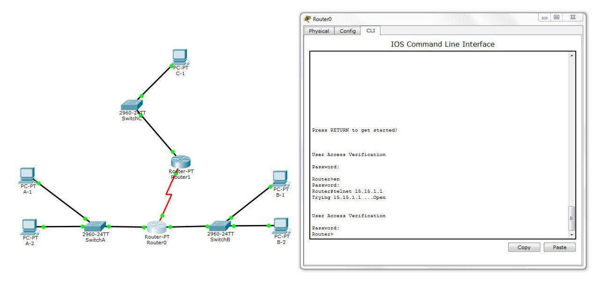

Рассахан Никита
Отчет по проделанным лабораторным работам
Лабораторная работа #1. Разработка простого веб-приложения
- Зарегистрироваться на Github (Ссылка на страницу)
- Подключиться к репозиторию stankin/inet-2017.
- Создать персональную веб-страницу в виде отчета по трем лабораторным работам, демонстрирующую владение простейшим
функционалом html/css/js.
- Загрузить результаты на Github, ознакомившись с концепцией систем контроля версий на примере git.
Лабораторная работа #2. Экосистема разработки программ с открытым кодом
Проектирование и разработка коллективного веб-приложения с использованием
html, css, js, json, xml.
Требования к веб-приложению:
- Функциональность.
- Участие в создании всех членов команды.
- Визуальная привлекательность.
- Наличие идей по дальнейшему развитию приложения.
Задачи, поставленные для разработки веб-приложения:
- Собрать команду для разработки веб-приложения и распределить роли:
- Сформулировать бизнес-требования.
- Объяснить членам команды их роли и задачи.
- Составить макеты экранов.
- Создать логотип (FinFirst).
- Заполнить wiki проекта на Github'е (отдельное вики)
Результат работы: создан прототип веб-приложения.
Лабораторная работа #3. Настройка локальной сети передачи данных
- Создание план IP-адресации небольшой сети. Проектируемая сеть состоит из 3 LAN'ов с заданным количеством узлов.
Для организации связи между устройствами в одной локальной сети используются коммутаторы, для организации связи между
локальными сетями - маршрутизаторы.
- Устранение ошибок и проверка работоспособности сети при помощи ping'ов. Ознакомление со статической маршрутизацией и
структурой IP-адресов.
- Изучение особенностей операционной системы Cisco IOS и работы с Command Line Interface (CLI). Добавление пароля для
привилегированного режима, а также для подключения через консоль и telnet. Баннер на одном из машрутизаторов содержит
подсказку по паролю на другом.
Итоговая сеть выглядела так:
